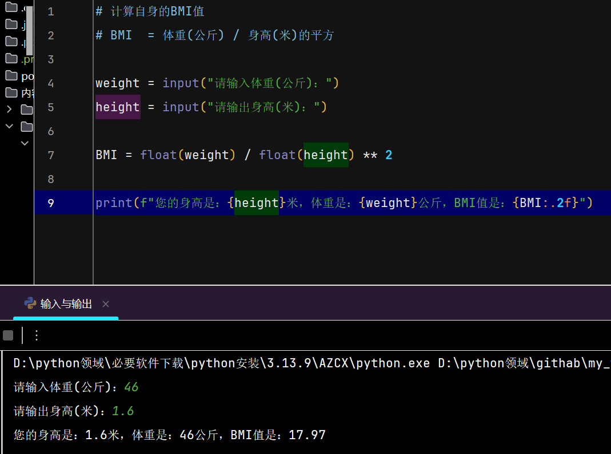
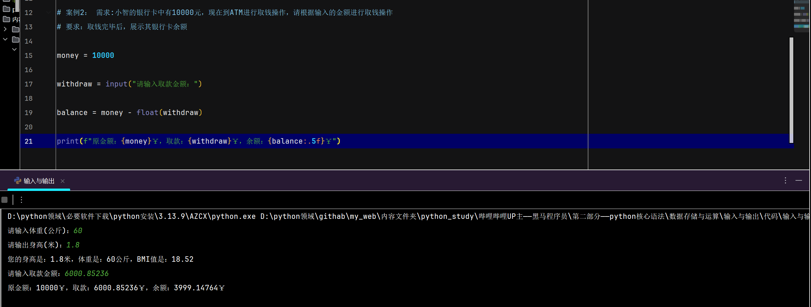
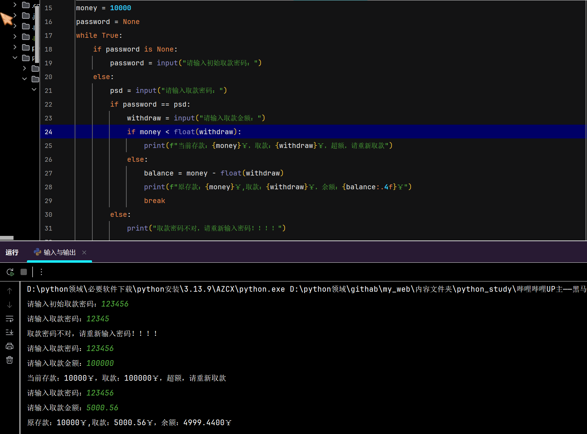

输入与输出
-
输入
- 输入：将用户输入的数据，存放进一个容器
- 语句：
变量(容器) = input("提示用户输入的内容") - 返回值是：用户输入的内容，默认是字符串，所以要进行数学运算，需要转成数字类型(
int/float)
-
输出
- 输出：将容器(变量)存储的数据，输出到控制台
- 语句：
print() - 返回值是：
None - 注意：输出的只能是字符串，也就说，括号内只能是字符串以及转型成字符串的变量
-
案例(计算BMI值)

-
案例(求取款后余额(
balance))
-
案例(求取款后余额(
balance))——扩展
-
python数据类型之间的转换 数据类型 语法 注意 字符串( str)类型语法： str()整型( int)语法： int()当强制转换的是非数字类型，且是浮点型的时候，直接报错 浮点型( float)语法： float()当强制转换的是非数字类型，直接报错(
也就是说：如果是整型不会报错，会自动转成浮点型)布尔( bool)语法： bool()正常情况都会强制转换成 True
遇到一下情况转成False:None、False、零值、空容器
但是会通过：__bool__或__len__改变行为以上的方法，都是将非对应方法的数据类型，强制转换成对应方法的数据类型 JavaScript与python对于整数强转的区别输入 JavaScript( parseInt())python( int())浮点数(如 3.14)3 3 字符串(如： "3.14")3 ❌ 报错 字符串(如： "3")3 3
JavaScript复习
| JavaScript的输入输出方式 | ||
|---|---|---|
| 输出 |
浏览器控制台输出：
console.log()
|
DOM输出：
document.write()
获取元素节点.innerHTML/outerHTML/insertAdjacentHTML
获取元素节点.innerText/textContent/insertAdjacentText
表单输出：value
|
| 获取 |
BOM获取：
prompt()
|
DOM获取：
document.write()
获取元素节点.innerHTML/outerHTML/insertAdjacentHTML
获取元素节点.innerText/textContent/insertAdjacentText
表单获取：value
|
| JavaScript的数据类型转换 | ||
|---|---|---|
| 数值类型 | 整数方法：parseInt() |
包含整数与浮点数：Number() |
浮点数方法：parseFloat() |
||
| 字符串(String) | 方法：String() |
方法：.toString() |
布尔(Boolean) |
方法：Boolean() |
false、0、-0、0n(BigInt零)、""(空字符串)、null、undefined、NaN
以上数据类型或数据：都叫(假值—— falsy)共同点，显示转换(Boolean())与隐式转换都是flase
除了以上数据类型或数据，都叫(真值—— truthy)共同点，显示转换(Boolean())与隐式转换都是true
|